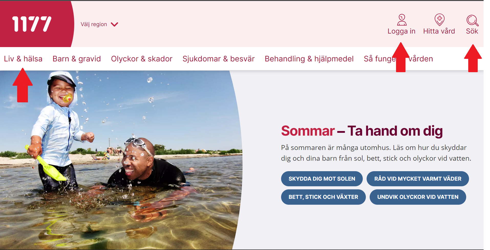
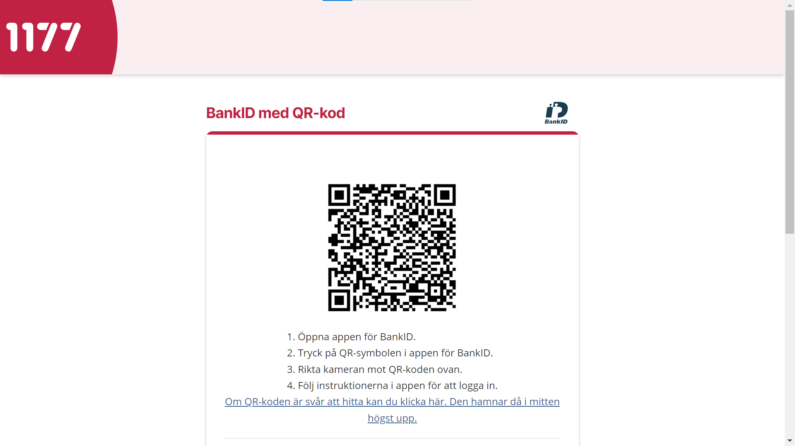
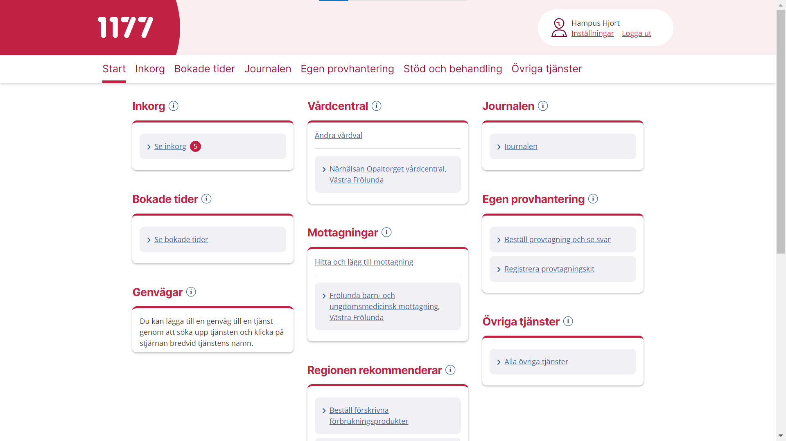
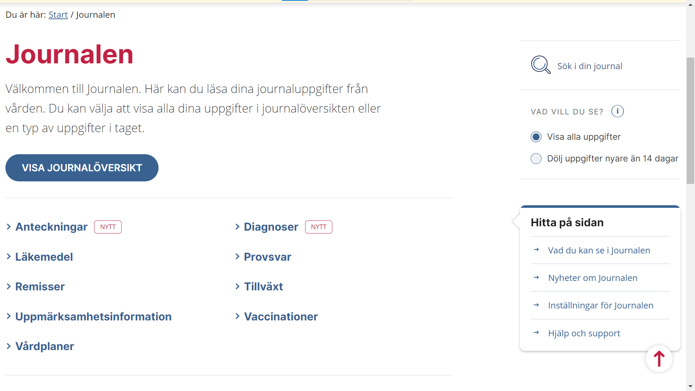

Vårdguiden 1177
Vad är Vårdguiden 1177
Vårdguiden är en hemsida där du kan hitta information om olika sjukdomar, symptom och allmänna hälsotips. Du kan även logga in för att se personlig information som tider du bokat eller mediciner du använder.
För att komma till vårdguiden så får du söka på vårdguiden eller 1177 i din webbläsare.
(Klicka här för att komma till vårdguiden) När du går in på vårdguiden hamnar på startsidan som du ser ovanför. Det kan också komma upp en ruta som ber dig att välja din region. Där finns det både generella kategorier du kan kolla på till exempel Liv och hälsa. Du kan även söka efter mer specifik information genom att klicka på förstoringsglaset.
Att logga in
För att få mer personlig information kan man logga in för att komma in på sitt eget konto. För att logga in klickar man på ikonen som liknar en person som det står “Logga in” under.

När du klickar där så kommer man till denna sida. Här behöver man välja hur man vill logga in. Vi kommer gå igenom hur man gör det med BankID eftersom det är vanligaste sättet att logga in.
(Klicka här för att läsa mer om BankID) När du väljer BankID kommer du hit. Nu behöver du gå in på din BankID-app på mobilen och scanna QR-koden för att logga in.
Ditt konto
När du har loggat in så hamnar du på startsidan. Det är härifrån du navigerar dig till den information du vill ha genom att klicka på något av underrubrikerna. För att få mer information om en kategori så kan man klicka på det lilla I:et i en cirkel.
En av sidorna är bokade tider där man kan se bokade läkarbesök. Man kan även boka om och avboka tider där men man kan inte boka en helt ny tid.
En annan väldigt användbar sida är Journalen. Här kan man hitta väldigt mycket personlig information som anteckningar från läkare, mediciner, diagnoser och mycket mer.
För att ta sig vidare klickar du på en av de blå länkarna, för att ta sig till anteckningar klickar du på den blåa texten som säger “Anteckningar” och då tar den dig vidare till den sidan. Om du känner att du har svårt att hitta vart saker är, så finns en ruta i det lägre högra hörnet som säger “Hitta på sidan”. Där kan du få mer hjälp med att hitta runt på sidan.